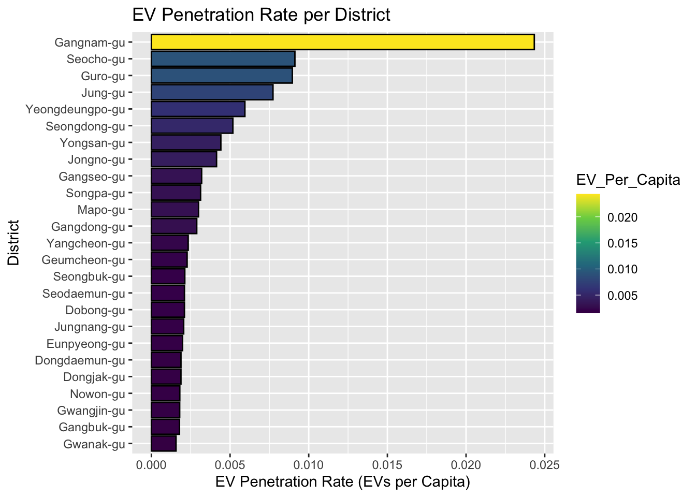
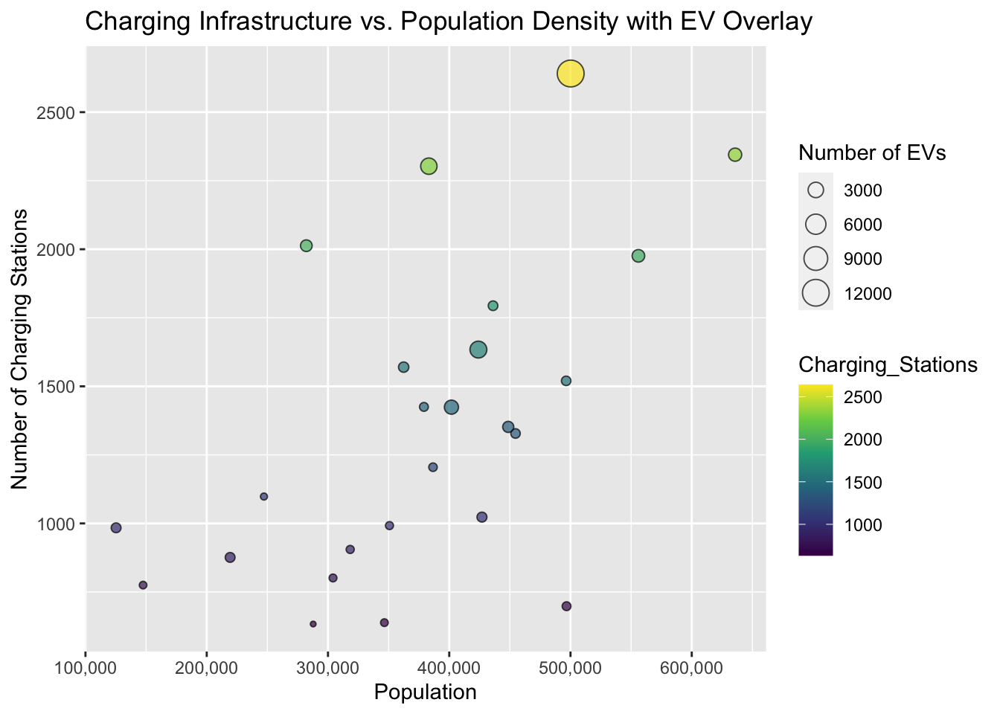
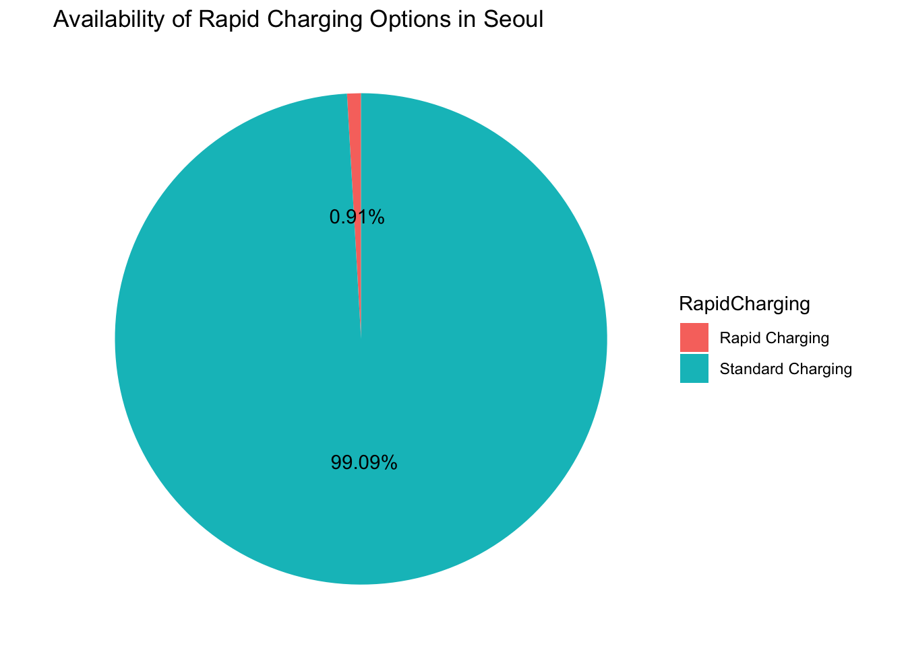
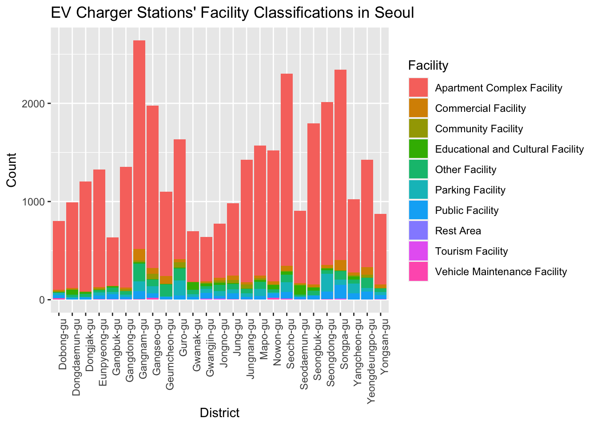

3 Results
3.1 EV Charging Stations
The plot indicates a positive correlation between the number of electric vehicles and the number of charging stations in each district. The positive slope of the line of best fit suggests that districts with more electric vehicles tend to have more charging stations. This is an expected trend, as more EVs would naturally drive the need for more charging infrastructure. However, there is a significant spread around the line of best fit, indicating that the ratio of charging stations to electric vehicles is not consistent across all districts. Some districts may be under-served relative to the number of EVs, while others may have a surplus of charging stations. The plot suggests that while there is an overall trend towards matching the number of charging stations with the number of electric vehicles, there may be inefficiencies or imbalances in certain areas that could be addressed for better service provision.
This plot illustrates a positive correlation between population size and the number of electric vehicles. This implies that, in general, as the population of a district increases, so does the number of electric vehicles in that district. However, the distribution of points suggests that the relationship is not perfectly linear. There are districts with relatively high populations that do not have as many electric vehicles as might be expected, and conversely, there are districts with lower populations that have a high number of electric vehicles. The confidence interval (shaded area) indicates variability around the line of best fit, suggesting that population size is not the sole factor influencing the number of electric vehicles in a district.
This graph provides insight into whether there are enough charging stations to meet the needs of the number of electric vehicles in each district. A lower ratio indicates better accessibility. Note that Gangnam-gu has much higher accesibility in comparison to other districts.

This graph shows the number of EVs per capita, indicating how common EVs are in each district. It is interesting to note that Gangnam-gu has significantly higher EV penetration rate compared to other districts.

This scatter plot can help visualize the relationship between the population density of each district and the density of the charging infrastructure, with the size of the points representing the number of EVs. We see that as the population gets larger, there seems to be more charging stations suggesting a positive correlation between population and number of charging stations.
The color intensity serves as a visual indicator of the ratio of charging stations to the population in each district. Darker shades represent higher accessibility, suggesting a favorable balance of charging infrastructure relative to the population. Notably, districts such as Gangnam-gu and Seocho-gu exhibit deep colors, indicating robust charging station accessibility. These areas appear well-prepared to support the electric vehicle population. Conversely, districts like Nowon-gu and Yangcheon-gu, depicted in lighter colors, indicate comparatively lower accessibility. This suggests a potential need for increased charging station installations to better accommodate the growing demand for electric vehicles in these regions. The heatmap serves as a valuable tool for urban planning, offering insights to guide infrastructure development and enhance the overall viability of electric vehicles across Seoul.


Distribution of Charger Model by District: A grouped bar chart showing the count of each charger model in each district. All of the districts show a higher prevalence of Slow charger model and none of the districs have a balanced distribution of slow and fast charger model.This suggests the need of fast model type of charging infrastructure across districts, indicating potential preferences or infrastructure planning.
Availability of Rapid Charging Options: A pie chart showing the proportion of charging stations offering rapid charging. The very low percentage of Rapid Charging options(< 1%) suggests the need of focus on providing quick charging solutions in Seoul which will contribute to enhanced accessibility for EV users.
Relationship Between Operating Institution and Charger Model: A clustered bar chart showing the frequency of each charger model operated by different institutions. This reveals distinct charging model preferences among different operating institutions in Seoul. Notably, the Environmental Ministry exclusively employs fast charging models, suggesting a strategic choice aligned with their goals. In contrast, the Local Government exhibits a mix of fast and slow models, with a preference for fast charging. Other agencies, in general, favor slow models, potentially driven by factors such as cost-effectiveness or specific operational considerations. Moreover, the subset of other agencies that receive subsidies overwhelmingly invests in slow charging models, indicating the influence of financial incentives on charging infrastructure choices. This diversity in preferences underscores the importance of understanding the nuanced factors guiding EV charger model selection among various institutions, with potential implications for infrastructure planning and policy considerations.
EV Charger Stations’ Facility Classifications in Seoul: This stacked bar chart provides an overview of the facility classifications of EV charger stations across different districts in Seoul.This indicate a significant concentration of EV charger stations within the category of “Apartment Complex Facility” across various districts in Seoul. However, there is a notable scarcity of charging stations in other facilities such as “Educational and Cultural Facility” and “Parking Facility.” This dominance of charger stations in apartment complexes may imply challenges in accessibility for individuals who do not reside in these areas. The limited presence in facilities like educational and cultural establishments or parking facilities suggests potential gaps in accessibility for those who rely on EV charging services outside residential contexts. This insight underscores the importance of strategically expanding charging infrastructure to ensure broader accessibility and convenience for a diverse range of users, addressing potential challenges associated with exclusive reliance on apartment complexes for EV charging needs.
3.2 Gas Station
We observe a decline in the number of open gas stations, indicating that more gas stations are closing than new ones are opening. Additionally, there is a consistent downward trend in the annual closure of gas stations. This trend might be attributed to the decreasing annual opening of gas stations, resulting in a decline in closures. The shift in the number of gas stations in Seoul becomes apparent around 2006, and this downward trajectory is more pronounced when examining the lagged plot of newly opened gas stations.
Seoul has actively promoted various electric vehicle distribution projects, exemplified by the establishment of a dedicated electric vehicle team in 2009. In its 2010 roadmap for green car development, the Ministry of Knowledge Economy outlined plans to produce 1.2 million units and export 900,000 units by 2015, encompassing electric vehicles. Furthermore, in 2011, the Seoul Metropolitan Government unveiled the ‘Seoul Electric Vehicle Master Plan 2014,’ aiming to operate 30,000 electric vehicles, including electric buses, taxis, and passenger cars, in Seoul by 2014. While the data does not definitively establish a causal relationship between the number of gas stations and EV support policies, we suspect that these policies may have directly contributed to the decrease in gas stations.
The left plot illustrates a consistent increase in the number of gas stations per 10,000 capita, reaching its peak in 2010. Following this peak, there is a noticeable decline in the number of gas stations per capita, with the exception of an anomaly observed in 2020. This exception could potentially be attributed to a declining population trend over the years, possibly influenced by a low birth rate. The steady decline in the number of gas stations per capita may indicate a broader shift towards electric vehicles (EVs) and an increasing emphasis on alternative energy sources. As the adoption of EVs rises, the demand for traditional fuel stations might decrease, contributing to the observed trend. This shift is more prominently displayed by the graph on the right, which clearly shows the declining trend in the number of gas stations for each district.
The survival trajectories of gas stations in Seoul before and after 2010 are clearly different, suggesting a transformative change in the industry. One significant factor we suspect is the rise of electric vehicles (EVs). Governments and consumers have increasingly prioritized clean energy solutions, leading to a potential decline in traditional gasoline-powered vehicles and subsequently affecting the viability of gas stations.